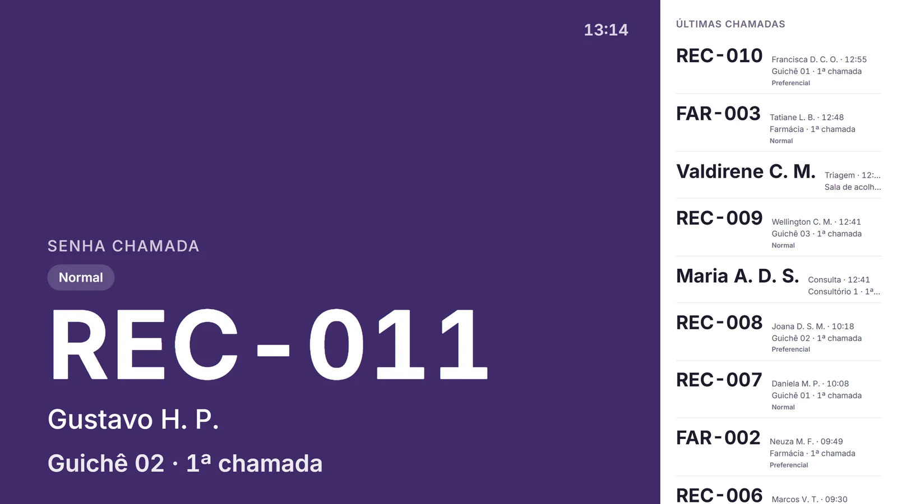
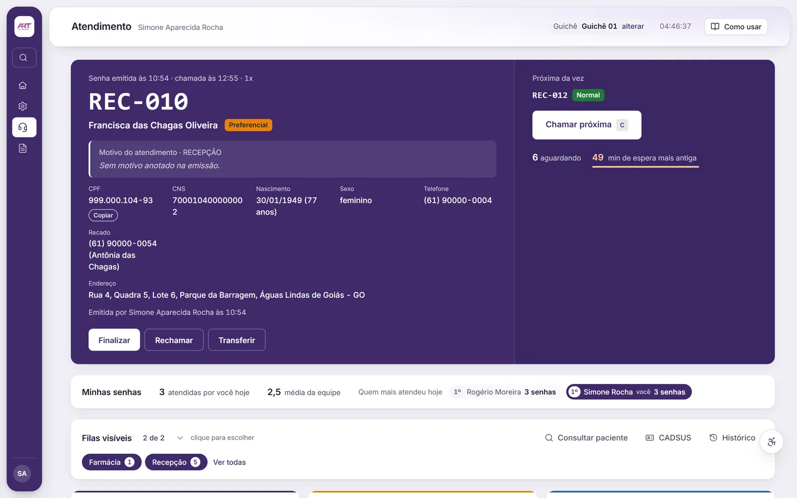

Senha com histórico
Emissão, chamada, início, pausa, transferência, encerramento e reabertura, cada passo registrado.
Recepção, senhas, totem e TV
O cidadão retira a senha, o guichê chama e a TV anuncia. Cada senha guarda seu histórico, do totem ao encerramento.


O que a recepção faz
Emissão, chamada, início, pausa, transferência, encerramento e reabertura, cada passo registrado.
O cidadão escolhe entre atendimento normal e preferencial e retira a própria senha.
Mostra a senha atual, o guichê e as últimas chamadas, atualizada na hora.
A TV anuncia a senha com a voz instalada no aparelho, sem enviar dados para a nuvem.
A senha sai na impressora térmica direto do navegador, testada em impressora Bematech.
Números do atendimento com exportação, incluindo dados para o Power BI.
Como funciona
Numa demonstração com dados fictícios, seguimos uma senha do totem até a chamada na TV.